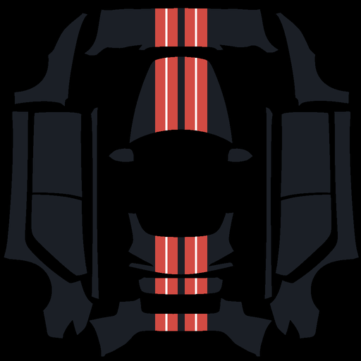

Per paneel of over de hele wrap
Zet een foto op één paneel, over een selectie, of over de hele wrap.
Kleur de panelen, zet een foto op één paneel of over de hele wrap, en download een PNG die klaar is voor de Tesla-app. Geen account nodig.

Open een voorbeeld om het aan te passen. Je krijgt dan een eigen kopie in je lijst met ontwerpen.
Voorbeelden laden…
In drie stappen van een leeg model naar een PNG voor de Tesla-app.
Elk Tesla-model heeft zijn eigen paneelindeling. Kies het jouwe.
Kleur de panelen, teken, of zet je foto's op één paneel of over de hele wrap.
Download de PNG en upload die in de Tesla-app.
Alles werkt in de browser, zonder account. Je foto's blijven op je eigen apparaat.
Zet een foto op één paneel, over een selectie, of over de hele wrap.
Teken aan één kant, en de andere kant volgt automatisch.
Met de muis, met pijltjes, of met twee vingers op je telefoon.
Bewaar zoveel ontwerpen als je wilt. Ze blijven in je browser staan.
PNG op de juiste afmeting, zwart tussen de panelen, maximaal 1 MB.
Werkt op pc, tablet en telefoon.